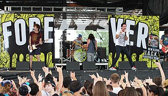

Forever the Sickest Kids
Forever the Sickest Kids is an American pop-punk band from Dallas, Texas. The band first signed with Universal Motown Records and released its debut album, Underdog Alma Mater, on April 29, 2008. The band's second album, Forever the Sickest Kids, was released on March 1, 2011. Universal Motown Records was later shut down in 2011 and the band was left unsigned for over a year until signing to Fearless Records in late 2012. The band released its third studio album, J.A.C.K., on June 24, 2013. In an Alternative Press article, the band was placed number one of the "22 Best Underground Bands".
Complete Discography & Tracklists (15)